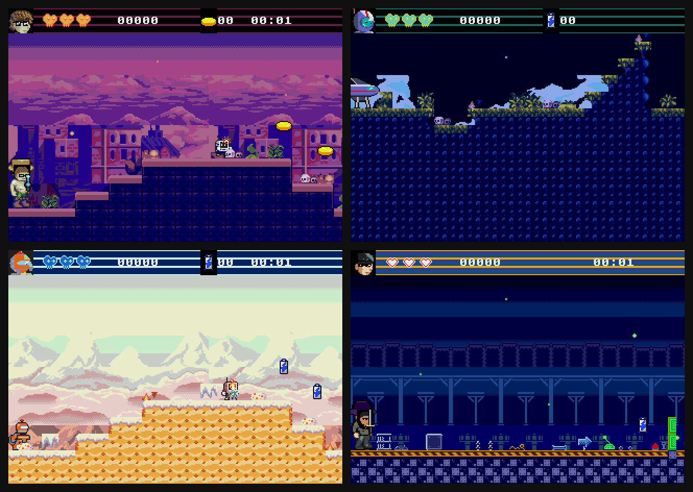
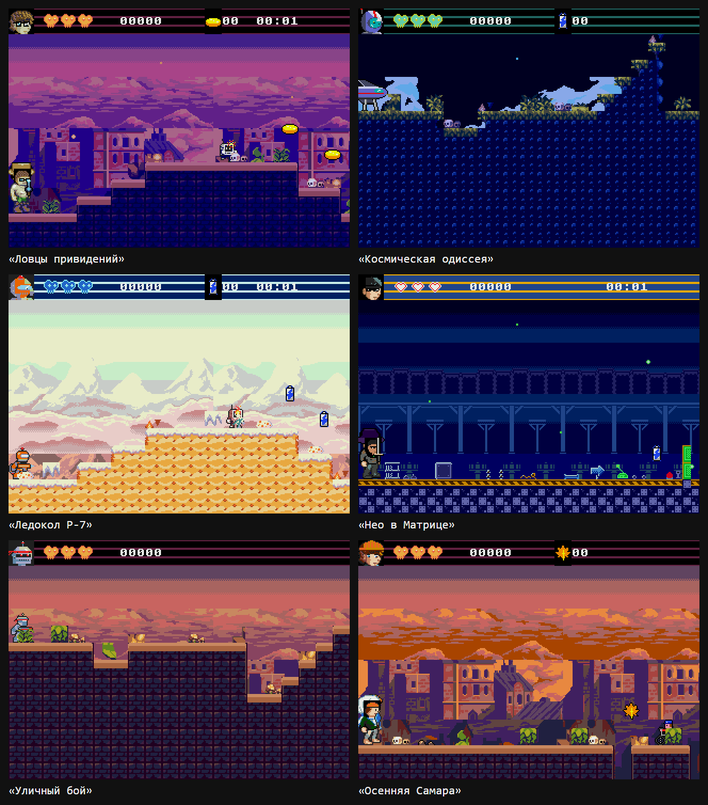

Вайб-стенд: платформер для Sega Mega Drive по описанию словами

Технологический стек :
C / SGDK 2.11 — движок игры
Python — генераторы и проверки
Claude Code — агент стенда
OpenSpec — спецификации до кода
Docker — сборка ROM
unittest — 1878 тестов
Эмулятор + бот для проверки уровней
Вайб-стенд
Что это: стенд для мероприятий. Посетитель описывает игру словами («рыцарь в замке», «ведьмак на болоте»), а стенд за несколько минут собирает платформер и запускает его на приставке Sega Mega Drive. Сделан в ЭйАй Клабе при самарском хакерспейсе s4m.space, показан с докладом на «Дне открытых корпусов».
Как устроен: посетитель не трогает код, он задаёт только данные. Движок на C написан и проверен заранее. Модель делает две вещи: разбирает описание и дорисовывает недостающее. Остальное на Python-скриптах. Все случайные выборы идут от одного числа (зерна), поэтому любую игру можно повторить. Каждый уровень проверяется дважды: расчётом проходимости до сборки и ботом в эмуляторе после.
Что сделали: работали два разработчика и нейросеть (Claude Code). Собрали:
- движок платформера на C и генерацию уровней с проверкой проходимости;
- фабрику тайлсетов: 11 тем окружения из открытых паков, у каждой 3–4 варианта освещения, фон в четыре слоя параллакса;
- героя из слоёв: 1367 слоёв LPC и правила, что с чем сочетается. По описанию и зерну собирается герой 32×48, плюс 34 готовых тела;
- 46 врагов, 19 предметов и 18 портретов. Подбираются по тегам из описания, лицензии учитываются (CC0, CC-BY, CC-BY-SA);
- пять шагов стенда, оформленных скиллами агента, и защиту движка от правок во время генерации.
Цифры:
- игра собирается за 1–4,5 минуты при пределе 15;
- 685 коммитов за две недели, причём основная работа уложилась в пять дней;
- 431 задача в планах OpenSpec, 1878 тестов, 1707 строк C в движке и около 30 тысяч строк Python в инструментах;
- 11 заданий, которые агент выполнял ночью без человека.
Чему научилась: каждый день смотреть на результат своими глазами, потому что модель пишет быстрее, чем успеваешь проверять. Закрывать все развилки до того, как оставляешь агента на ночь. И не верить на слово записям «проверено».
Игры с дня стенда: что собрали посетители по своим описаниям.
